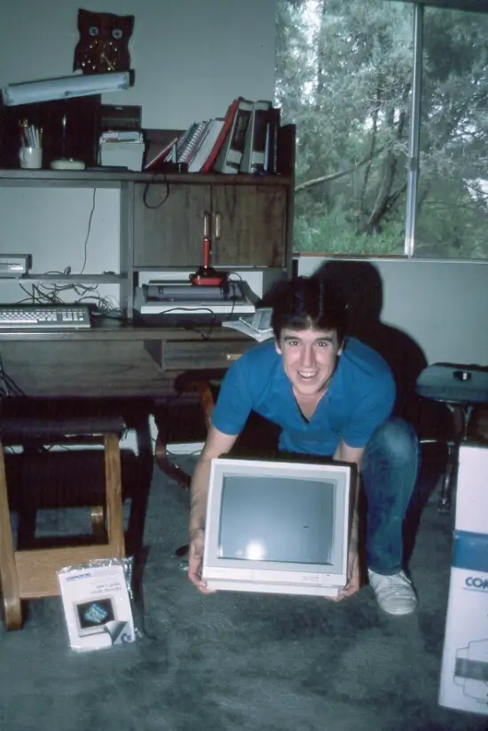
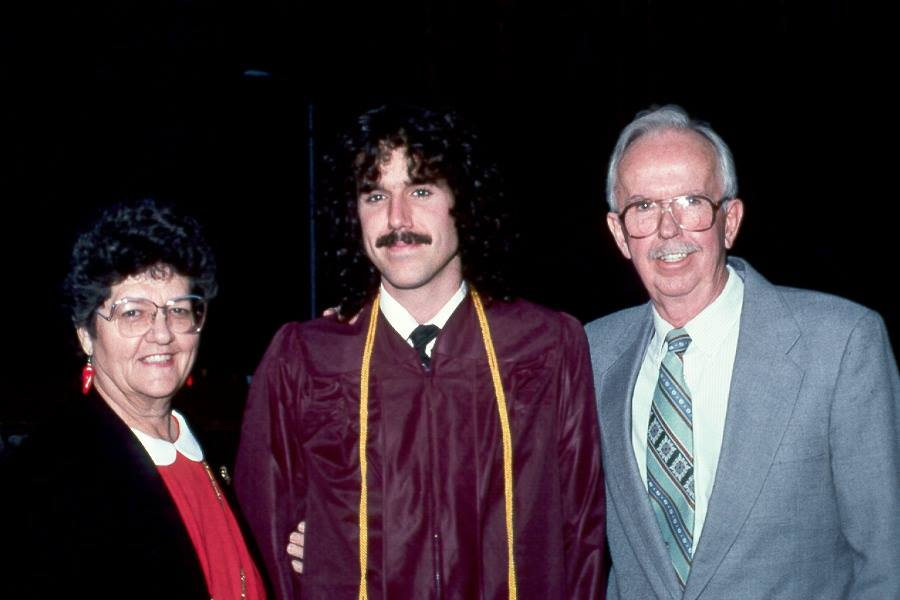

Terrence Andrew Davis (December 15, 1969 – August 11, 2018) was an American electrical engineer, computer programmer, and outsider artist best known for creating and designing TempleOS, a public domain operating system. In 1996, Davis began experiencing regular manic episodes, some of which led to hospitalization. Initially diagnosed with bipolar disorder, he was later declared to have schizophrenia. Eight months before his death, he struggled with periods of homelessness. His fans brought him supplies, but Davis refused their offers of housing. In August 2018, he was struck by a train and died at the age of 48. The driver of the train stated he believed it was a suicide.

Terrence Andrew Davis was born in West Allis, Wisconsin, on December 15, 1969, as the seventh of eight children; his father was an industrial engineer. The family moved to Washington, Michigan, California and Arizona. As a child, Davis used an Apple II at his elementary school, later learning assembly language on a Commodore 64 as a teenager. Davis grew up Catholic.

In 1994, he earned his master's degree in electrical engineering from Arizona State University. On the subject of his certifications, he wrote in 2011: "Everybody knows electrical is higher in the engineering pecking order than [computer systems] because it requires real math". For several years he worked at Ticketmaster on VAX machines.